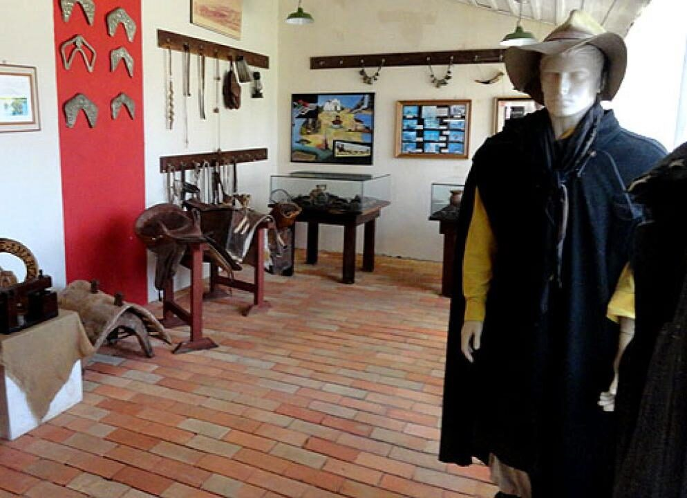
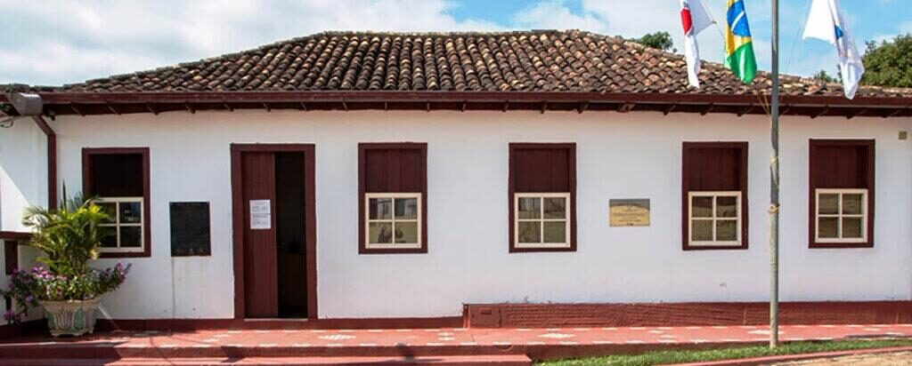
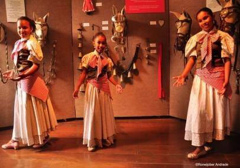
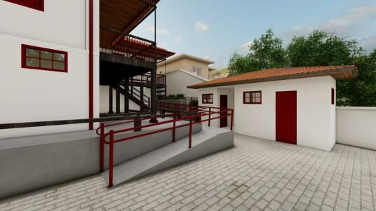

A memória dos tropeiros, viva num casarão do século XVIII
Desde 2003, o Museu do Tropeiro guarda mais de 500 peças que contam a história de quem cruzou Minas no lombo de mulas, e ajudou a construir o Brasil.
Um pedaço da Estrada Real para conhecer
Da sala de exposição à roda de viola das noites de lua cheia, o Museu do Tropeiro é ponto vivo de memória e cultura em Ipoema.

Acervo Digital
Indumentária, arreios, ferramentas de ofício e documentos que contam a rotina das tropas.
O Tropeirismo
Como os tropeiros abriram caminhos, levaram notícias e moveram a economia de Minas Gerais.

Visite o Museu
Endereço, horários, telefone e como chegar a Ipoema, na Estrada Real.
Roda de Viola, sob as bênçãos da lua cheia
O museu também é palco de cultura popular: Lavadeiras de Ipoema, Estaladores de Chicote, Comitiva do Berrante, Sons da Tropa e os Meninos Trovadores da Estrada Real se apresentam na tradicional Roda de Viola, de maio a outubro, nos sábados de lua cheia.
Conhecer a história do museu →

Um novo capítulo para o Museu do Tropeiro
Em parceria com a NATA e a Prefeitura de Itabira, o museu vive um projeto de revitalização do imóvel, novo projeto museográfico e concepção de um museu virtual, para preservar o acervo físico e alcançar públicos que talvez nunca visitem Ipoema pessoalmente.
Ver o projeto de revitalização →Receba novidades do museu
Cadastre seu e-mail para acompanhar a agenda cultural e as novidades do projeto de revitalização.